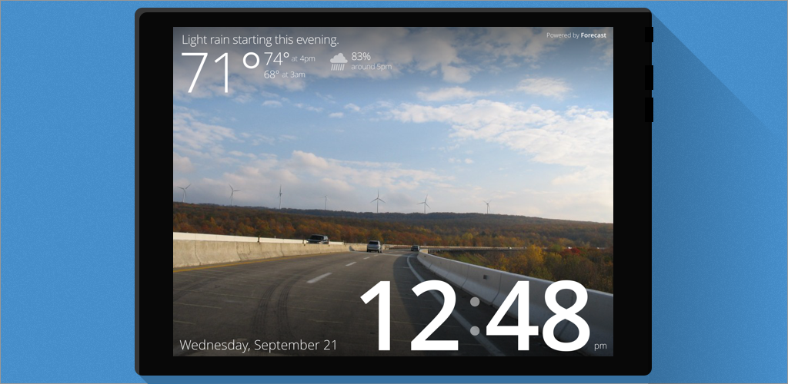
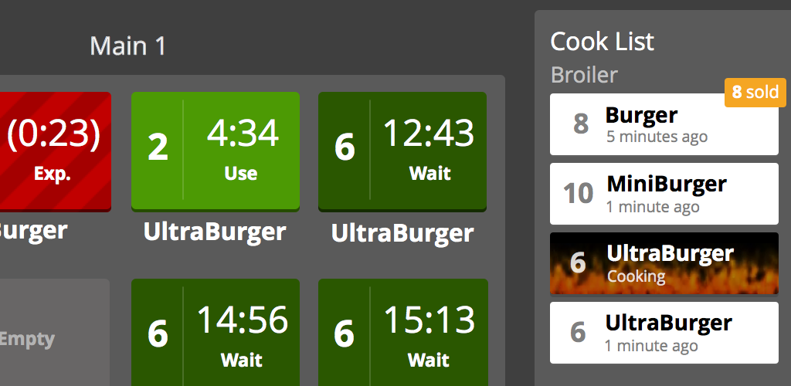
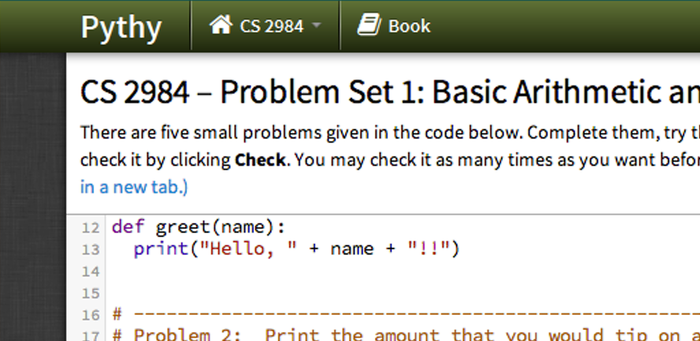

JGA: Crossroads of Destiny
As an exiled infomercial chef, embrace your destiny and bring balance to the world once again! A story-driven side-scrolling RPG made using Unity.
Read more...
Weatherclock
With this webapp, any small internet-enabled device can become a wall-mounted clock displaying the weather.
Read more...
The New Adventures of Scrapinold Dooington
A webcomic chronicling the crazy post-retirement adventures of world-renowned detective Scrapinold alongside a bizarre cast of characters.
Read more...

Drive-Thru Monitor
Stay in command of your restaurant's drive-thru with this highly visual way to monitor the the current status of all waiting vehicles.
Read more...
Production Control
As a fast-food burger chef, you'll need to monitor the status of all your currently-cooked ingredients. This app provides a one-stop shop for all ingredient management.
Read more...
Pythy
What if intro computer science students didn't have to install any software, and could start programming right away?
Read more...
Archive
Check out a gallery of older projects that aren't nearly as interesting as the above ones.
Read more...